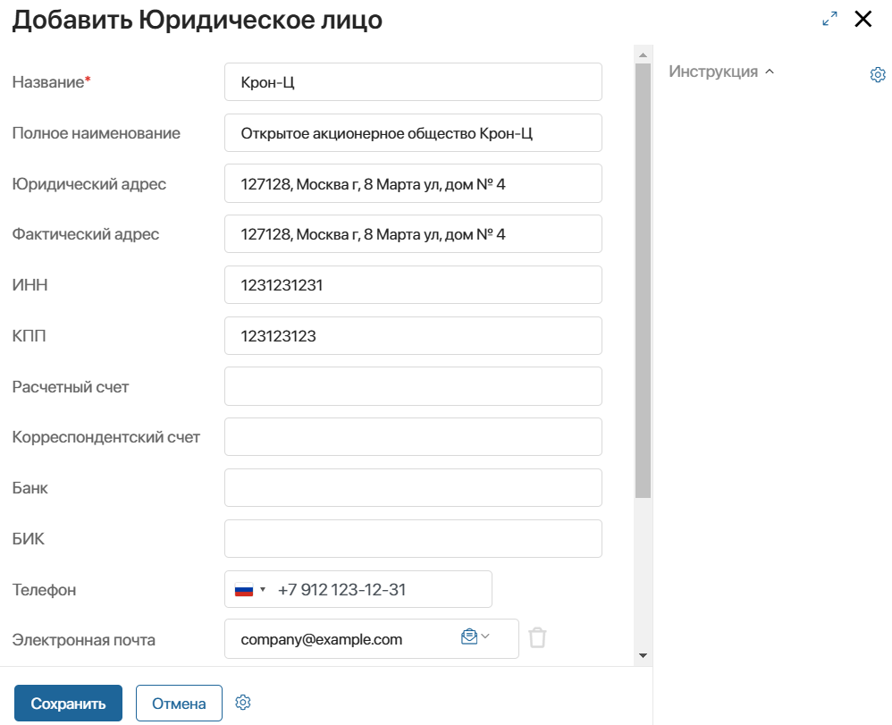
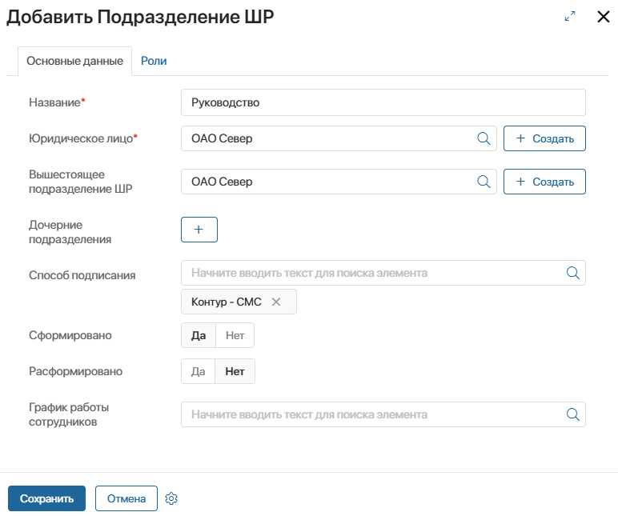
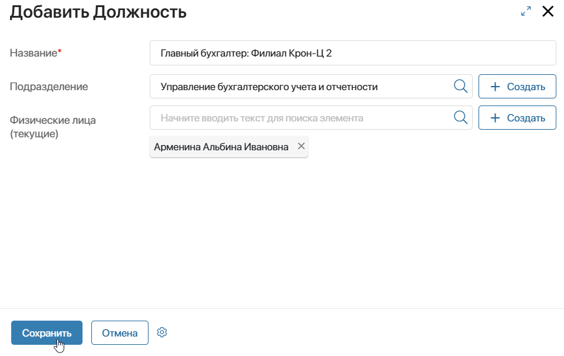

После выполнения первичных настроек ELMA365 КЭДО 3.0 администраторы системы создают юридические лица и выполняют настройку штатной и управленческой структур каждой организации. Таким образом задаётся официальная и внутренняя иерархии юридического лица, и распределяются полномочия внутри компании.
Затем в соответствии с добавленными структурами специалисты отдела кадров трудоустраивают сотрудников в организацию, в кадровых процессах корректно определяются ответственные, документы проходят заданные маршруты обработки.
Если компания состоит из нескольких юридических лиц, вы сможете отразить это в штатном расписании и управленческой структуре. Это позволит настроить доступ сотрудникам на уровне филиалов компании. Специалисты отдела кадров и бухгалтеры будут вести процессы только по тем сотрудникам, которые трудоустроены в их юридическое лицо.
В компании можно совместно использовать штатное расписание и управленческую структуру. Подробнее о функциях, которые выполняют настроенные иерархии, и их различиях между собой читайте в статье «Штатная и управленческая структуры юридического лица».
Способы настройки структуры организации
Настроить штатную и управленческую структуры можно двумя способами:
- загрузить юридические лица и их структуры из 1С — доступно, если в компании настроена интеграция с 1С. Администратор запускает процесс обмена данными между 1С и ELMA365. В результате в справочники загружаются данные о юридических лицах, должностях и подразделениях, создаются принятые в компании роли сотрудников. Импортированные структуры можно просмотреть в разделе КЭДО 3.0 > Структура компании на вкладках Штатное расписание и Управленческая структура.
Необходимые действия по настройке структур этим способом описаны в статье «Загрузить справочники и данные из 1С в ELMA365»;
- создать юридические лица и настроить их структуры вручную — администратор добавляет элементы в приложение с юридическими лицами компании. Затем определяет штатную и управленческую структуры на странице Структура компании: создаёт элементы для подразделений и должностей, которые сохраняются в отдельных приложениях, и указывает роли подписантов, бухгалтеров, специалистов отдела кадров и т. д.
Порядок настройки структур вручную рассмотрим в этой статье.
Шаг 1. Добавить юридическое лицо
Начните настройку иерархии вашей компании с создания всех зарегистрированных юридических лиц. Для этого:
- Перейдите в раздел Системные справочники и откройте приложение Мои юридические лица.
- В правом верхнем углу нажмите кнопку + Юридическое лицо.
- В открывшемся окне заполните данные о компании: название и полное наименование, юридический и фактический адреса, ИНН, ОГРН, КПП и другие реквизиты, имя директора и т. д.

- Сохраните карточку юридического лица.
- Таким образом создайте элементы для каждого юридического лица в компании.
Шаг 2. Настроить штатное расписание организации
Штатное расписание — это список утверждённых в юридическом лице подразделений и должностей. Оно настраивается обязательно, поскольку используется для трудоустройства сотрудников в организацию и определения подписантов со стороны работодателя в кадровых процессах.
Штатное расписание может повторять организационную структуру компании, заданную в специальном разделе в ELMA365. Однако при работе с ELMA365 КЭДО 3.0 учитывается именно штатное расписание, созданное в разделе КЭДО 3.0 > Структура компании.
Рассмотрим порядок настройки штатного расписания.
Создать подразделения в штатном расписании
Начать создание штатного расписания можно с добавления ключевого подразделения с названием организации. Далее создайте главные отделы, существующие в компании, и в них — нижестоящие подразделения. Таким образом вы создадите штатную структуру в виде дерева подразделений. Созданные элементы сохранятся в приложении Подразделения ШР.
Такая настройка позволит:
- сгруппировать все подразделения, относящиеся к одному юридическому лицу;
- указать некоторые параметры только в ключевом подразделении, не настраивая их для каждого отдела. Например, можно выбрать способ подтверждения сертификатов электронной подписи для сотрудников или определить роли пользователей в кадровых процессах.
Для создания подразделений выполните следующие действия:
- В разделе КЭДО 3.0 откройте страницу Структура компании на вкладке Штатное расписание и в правом верхнем углу нажмите Редактировать. Тогда отобразятся инструменты для создания структуры.
- Перейдите к созданию подразделения одним из следующих способов:
- нажмите + Создать и затем — появившуюся кнопку + Подразделение;
- выберите подразделение, для которого хотите создать дочернее и справа от его названия нажмите значок .
- Заполните данные:

- Название* — укажите наименование отдела;
- Юридическое лицо — нажмите значок лупы и выберите из справочника Мои юридические лица, к какой организации относится подразделение. Чтобы добавить новую организацию, нажмите + Создать. При добавлении дочернего подразделения по умолчанию отобразится юридическое лицо, заданное для вышестоящего подразделения. Его можно изменить;
- Вышестоящее подразделение ШР — при добавлении дочернего подразделения это поле заполнится автоматически. Указанное значение можно заменить на другое;
- Дочерние подразделения — нажмите значок плюса, чтобы открыть форму создания нового подразделения и добавить дочерние отделы;
- Способ подписания — поле заполняется после выполнения настройки подписания кадровых документов на уровне компании. Определите, как сотрудники получат код подтверждения выпуска сертификата электронной подписи. Для этого выберите запись справочника Способ подписания. Можно упростить настройку, задав способ только в головном подразделении юридического лица;
- Сформировано — в этом поле по умолчанию задано значение Да. Это означает, что подразделение утверждено. Для добавленного подразделения в системе создаются группы доступа;
- Расформировано — чтобы не создавать группу доступа для расформированного подразделения, выберите вариант Да;
- График работы сотрудников — вы можете установить для подразделения график работы, выбрав элемент соответствующего справочника.
- На вкладке Роли нужно определить ответственных за ведение кадровых процессов в юридическом лице. Для этого основные роли сотрудников сопоставляются с должностями из штатного расписания. Так в подразделениях нужно указать должности бухгалтеров, специалистов отдела кадров, руководителей, подписантов и т. д.
Эта настройка выполняется после создания штатного расписания и управленческой структуры. Подробнее об этом читайте в статье «Определить роли пользователей в кадровых процессах».
- Сохраните карточку подразделения. Созданный элемент добавится в приложение Подразделения ШР.
Создать должности в штатном расписании
Должность из штатного расписания используется при трудоустройстве в организацию и связывается с определённым сотрудником.
Одного сотрудника можно принять на несколько должностей штатного расписания. Это закрепляется юридически и оформляется с помощью кадровых процессов как совмещение или внутреннее и внешнее совместительство позиций.
Чтобы создать регламентированные должности юридического лица:
- В разделе КЭДО 3.0 откройте страницу Структура компании на вкладке Штатное расписание и в правом верхнем углу нажмите Редактировать, чтобы отобразить инструменты для создания элементов.
- Добавьте должность одним из следующих способов:
- нажмите + Создать и затем — появившуюся кнопку + Должность;
- выберите подразделение, в котором хотите добавить должность и справа от его названия нажмите значок .
- Заполните поля:
- Название* — укажите наименование должности штатного расписания;
- Подразделение ШР* — выберите, к какому подразделению относится должность штатного расписания. Если на предыдущем шаге подразделение уже выбрано, оно отобразится по умолчанию;
- Сотрудники — при создании должности поле можно не заполнять. Сотрудник запишется в поле автоматически, когда пройдёт процесс трудоустройства на эту позицию;
- Категории — заполнять поле не нужно, поскольку категории для должностей из штатного расписания можно будет задавать в последующих версиях решения КЭДО 3.0;
- Утверждена*, Закрыта* — в этих полях вы можете отметить статусы должности. Также поля заполнятся автоматически данными из аналогичных полей должности в 1С при настроенной интеграции;
- Количество ставок, ФОТ, Оклад — заполните эти данные, если они известны. После формирования штатной структуры внести значения в эти поля может специалист отдела кадров.
- Сохраните карточку должности по штатному расписанию. Созданный элемент добавится в приложение Должности ШР.
Шаг 3. Настроить управленческую структуру организации
Управленческая структура — это внутренняя иерархия юридического лица. Она может отличаться от штатного расписания и настраивается опционально. Использовать её можно для определения фактических руководителей сотрудников и настройки маршрутов согласования заявлений и заявок.
Чтобы настроить иерархию, в разделе КЭДО 3.0 > Структура компании перейдите на вкладку Управленческая структура и добавьте сначала подразделения, а затем — входящие в них должности. Созданные элементы структуры сохранятся в приложениях Подразделения и Должности.
Создать подразделения в управленческой структуре
Для упрощения настроек управленческой структуры сначала добавьте ключевое подразделение с названием юридического лица. Затем создайте другие главные и отделы и укажите в них ключевое подразделение как вышестоящее.
Так вы сможете сгруппировать все подразделения, относящиеся к одному юридическому лицу. Также это позволит задать способ подтверждения сертификатов электронной подписи для сотрудников только в ключевом подразделении, не указывая эту настройку в каждом отделе.
Чтобы создать подразделение:
- В разделе КЭДО 3.0 откройте страницу Структура компании на вкладке Управленческая структура и в правом верхнем углу нажмите Редактировать. Тогда отобразятся инструменты для создания структуры.
- Перейдите к созданию подразделения одним из следующих способов:
- нажмите + Создать и затем — появившуюся кнопку + Подразделение;
- выберите подразделение, для которого хотите создать дочернее и справа от его названия нажмите значок .
- В открывшемся окне данные указываются таким же образом, как на форме создания подразделения штатного расписания. Обязательным для заполнения является название отдела. Если нужно, внесите вышестоящее и дочернее подразделение и определите способ подписания.
- В карточке подразделения определяются ответственные за ведение кадровых процессов: бухгалтеры, специалисты отдела кадров, подписанты и т. д. Для этого поля, обозначающие роли пользователей, сопоставляются с должностями сотрудников из управленческой структуры.
При добавлении подразделения оставьте поля пустыми. Эта настройку нужно выполнить после создания штатного расписания и управленческой структуры. Подробнее об этом читайте в статье «Определить роли пользователей в кадровых процессах».
- Сохраните карточку подразделения. Созданный элемент добавится в приложение Подразделения.
Создать должности в управленческой структуре
Должность управленческой структуры связывается с физическим лицом. Назначить физическое лицо можно на несколько должностей. Для этого пользователю не нужно проходить процесс трудоустройства или перевода.
Для создания должности управленческой структуры выполните действия:
- В разделе КЭДО 3.0 откройте страницу Структура компании на вкладке Управленческая структура и в правом верхнем углу нажмите Редактировать, чтобы отобразить инструменты для создания элементов.
- Добавьте должность одним из следующих способов:
- нажмите + Создать и затем — появившуюся кнопку + Должность;
- выберите подразделение, в котором хотите добавить должность и справа от его названия нажмите значок .
- В открывшейся форме укажите название и подразделение для должности. Если в системе заполнен справочник Физические лица, укажите пользователя, который будет занимать должность. Сделать это можно позднее при определении ролей пользователей в кадровых процессах на уровне подразделений.

- Сохраните карточку должности управленческой структуры.Созданный элемент добавится в приложение Должности.
Шаг 4. Определить роли сотрудников в кадровых процессах
Когда штатная и управленческая структура созданы, вы можете назначить ответственных за кадровый электронный документооборот. Для этого в подразделениях определяются должности, на которые трудоустраивают сотрудников, выполняющих ту или иную роль в процессах: отдел кадров, бухгалтерия, офис-менеджеры, подписанты и т. д.
Это позволяет соблюдать иерархию компании в кадровых процессах и корректно назначать задачи на пользователей. Если в компании заведено несколько юридических лиц, после определения ролей вы также сможете ограничить права доступа к кадровым документам по филиалам.
Подробнее об этом читайте в статье «Определить роли пользователей в кадровых процессах».
Обратите внимание, при переносе решения КЭДО 3.0 из одной компании в другую выполняется настройка групп доступа, которые генерируются при создании штатной и управленческой структур. Об этом читайте в статье «Настроить группы доступа при экспорте решения КЭДО 3.0».